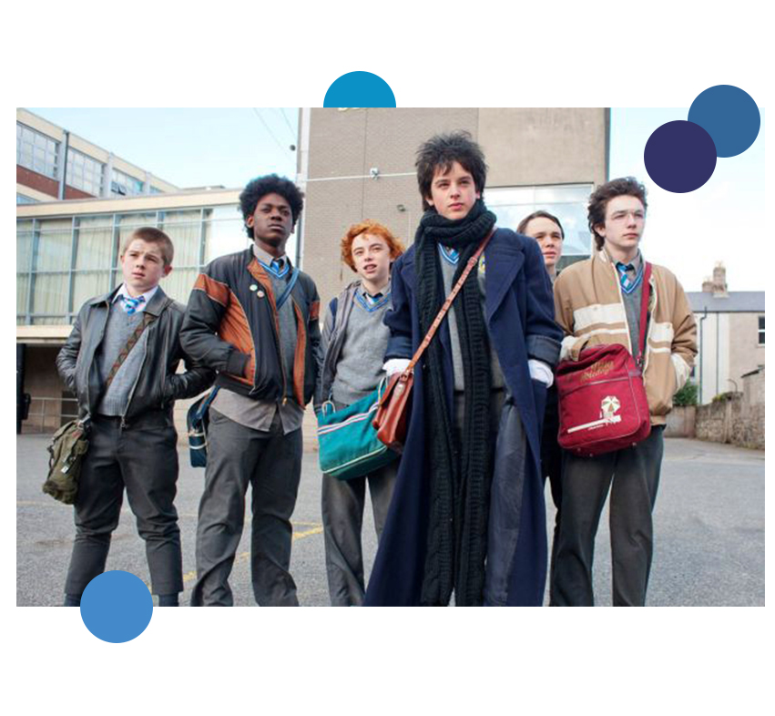

본문콘텐츠영역
About
- 
-
- Love I First Met,
Music I First Made
- pitapatLove I met for the first time, music I made for the first time! 'Connor' falls in love with the first sight when I see a wonderful 'Lafina' like a model at the school where I went to transfer. 'Connor', who lied to Rafina that he was playing a band with a desire to show well, suggests music video appearances and gets approval. For a while, 'Connor' collects the clumsy members and forms a band called 'Sing Street' and starts to make music by visiting the albums in the house such as 'Duranduran', 'A-ha', 'The Clash'. Starting with the first song, 'Connor', who moves the heart of 'Lafina', makes the best song for her and prepares the first concert of her life. The first song of life for you! The heartbreaking sound of 'Sing Street' begins now!
- Plot
- Sing Street is a music film released in 2016; directed and screenplayed by John Carney and set in Dublin, Ireland. Perdia Walshpillo, Lucy Boynton, Maria Doyle Kennedy, Jack Rayner, Kelly Thornton and Perdia Walshpillo. If director John Carney focused on the love, dreams and pain of adult men and women in his previous works, this work contains the freshness of teenage high school students. It was first unveiled at the Sundance Film Festival on January 24, 2016 [1] and was released in Ireland on March 17, 2016.
- Perdia Walshpillo - Connor Lalor
- leader and vocalist The main character. When I could not adapt to the school, I formed a band at first sight against 'Lafina'.
- Lucy Boynton - Rafina Station
- The female lead character. Wants to make a model's dream and go to England. Decides to appear in band music videos on the proposal of "Connor."
- Jack Rayner - Brendan
- Connor's older brother, The brother of "The Corner". Connor had the greatest influence on his interest in music. It greatly helps him to get the direction of the band.
- Mark McKenna - Aman
- composition and others. The spiritual landlord of the band 'Sing Street'. He was skilled in composing and producing various instruments including guitars, and was the most helpful to the band.
top